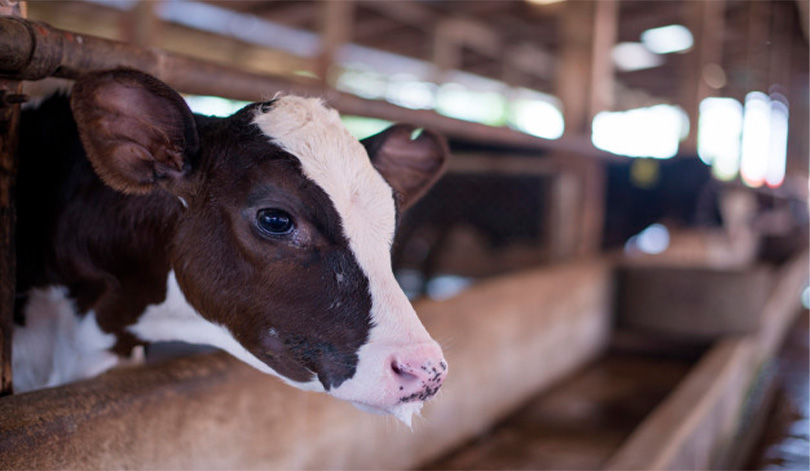

История

К основным направлениям производственной деятельности в растениеводстве относятся выращивание картофеля,
зерновых культур (ячмень, тритикале, пшеница), кукурузы и рапса. Для кормовой базы выращивают однолетние,
многолетние травы и прочие культуры.